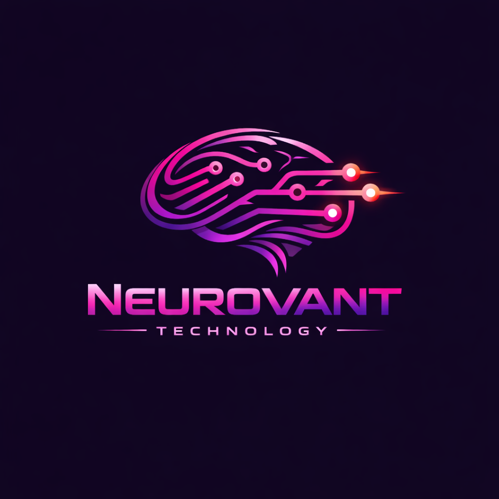

The modern world is facing a growing issue: mass obesity and excessive screen time. People spend hours glued to their devices, leading to reduced productivity, chronic laziness, and constant fatigue. The average person’s screentime‑to‑exercise ratio is dangerously unbalanced.
Neurofit solves this by requiring users to complete a set number of exercises before they can return to using their electronic device. When used with discipline and intention, Neurofit can help eliminate the cycle of inactivity, reduce obesity, and rebuild healthy habits.
Neurovant Technology is a next‑generation development studio focused on building highly advanced, AI‑powered mobile applications.
Our first major development is an AI‑driven exercise enforcement system that requires users to complete physical activity — such as push‑ups — before unlocking or accessing certain features.